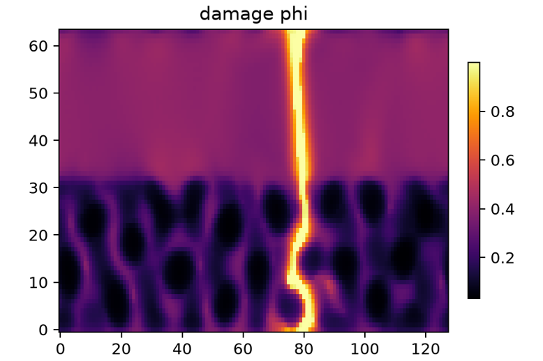
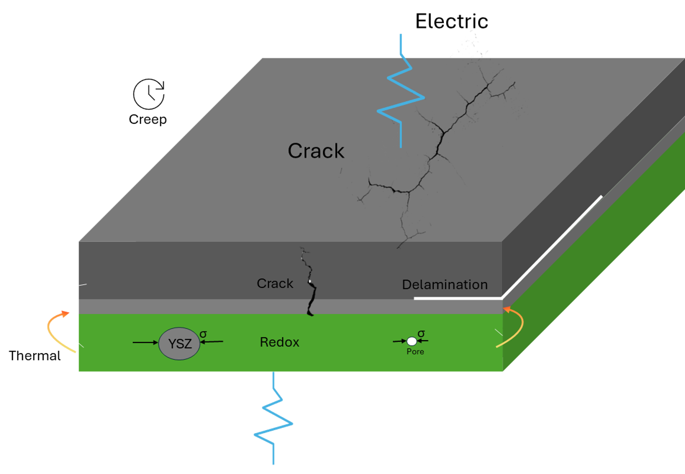
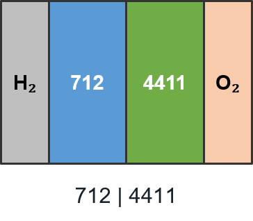

Biography
Siyuan Liu is a Ph.D. researcher in Chemical Engineering at West Virginia University. The research focuses on the mechanical reliability of solid oxide electrochemical cells, with particular interest in coupled thermal, chemical and mechanical processes.
Current work uses finite element modeling and phase-field fracture methods to investigate stress development, crack initiation and damage in electrodes and electrolytes. Earlier research involved computational modeling of multiphase flow in porous media.
Education
- Ph.D. in Chemical Engineering, West Virginia University (2023–present)
- M.S. in Safety Science and Engineering, China University of Mining and Technology (2019–2022)
- B.S. in Safety Engineering, Taiyuan University of Technology (2015–2019)
Research Interests
- Computational solid mechanics and finite element analysis
- Thermomechanical behavior and degradation of solid oxide cells
- Phase-field fracture and crack propagation
- Multiphysics modeling and numerical simulation
- Scientific computing and engineering applications of machine learning
Research
FEM Phase-Field Fracture Simulation
Finite-element phase-field simulations of crack evolution, including damage localization and the associated stress fields.
Read more
Mechanical Stability of Solid Oxide Cells
Mechanical response and structural reliability of solid oxide cells under thermal and redox loading.
Read more
Bilayer Electrolyte Design
Effects of atmosphere, layer order, layer ratio and thickness on bilayer electrolyte performance.
Read more